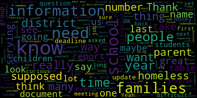
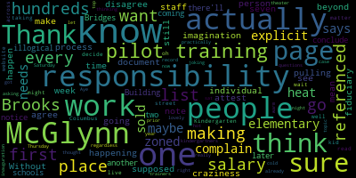
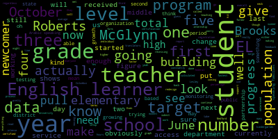

AI-generated transcript of January 14, 2019 Medford School Committee meeting
English | español | português | 中国人 | kreyol ayisyen | tiếng việt | ខ្មែរ | русский | عربي | 한국인
Back to all transcripts
[Unidentified]: The meeting of the Medford School Committee will now come to order.
[Burke]: The Secretary will call the roll. Mr. Benjamin?
[SPEAKER_09]: Present. Present. Van Buren?
[Burke]: Present. Seven present, none absent. All please rise and salute our flag.
[LRgDo3q--Pg_SPEAKER_04]: I pledge allegiance to the flag of the United States of America, and to the Republic for which it stands, One nation, under God, indivisible, with liberty and justice for all.
[Burke]: Before we move to the approval of the minutes, we are at the start of our school year, of our calendar year, and we need to nominate a new secretary and vice chair of the school committee. At this point in time, I'd like to open up nominations for the vice chair of the Medford School Committee for the calendar year 19. There's a nomination for Kathy Kreatz. Is there any other nominations that you'd like to put in? No? There's a second on the floor by Ms. Van der Kloot. I'll close that portion of the nominations. Roll call vote, please.
[SPEAKER_09]: Mrs. DeVita, Kathy Kreatz. Mrs. Kreatz, yes. Mrs. DeSouza, yes. Mr. Materi, yes.
[Burke]: Kathy Kreatz. Unanimous vote. Kathy Kreatz, our new Vice Chair of the Medford School Committee. Yay, Kathy! And now at this time we would like to open up nominations for the Secretary of the Medford School Committee for 2019. Is there a name you'd like to put in nomination? Ms. Kreatz nominates Miyama Stone. This is second on the floor by Ms. VanDekloot. Any other names for nomination? Hearing and seeing none, I'll close that portion of the nominations. Roll call vote please.
[SPEAKER_09]: Ms. DeVetta, Miyama Stone. Ms. Kreatz, Miyama Stone. Ms. DeVetta, Miyama Stone. Ms. VanDekloot, Miyama Stone.
[Burke]: Mia Mustone, unanimous vote. Mia Mustone, our new secretary. Congratulations, Ms. Mustone. Ms. Kritz, if you will give the sheets over to your colleague for the rest of the meeting. Trial by fire. Next up, approval of the minutes of the January 7, 2019 meeting. Is the motion for approval by Mr. Benedetto, seconded by Mr. Russo? All those in favor? Aye. All those opposed? Motion passes. Approval of Bills Transfer of Funds. Motion to approve by Mr. Russo, seconded by Mr. Benedetto. Roll call vote, please.
[Unidentified]: Remember it's even and odd.
[Burke]: Yes, 7 in the affirmative, 0 in the negative, the motion passes. Next up is the approval of payrolls and actually if you can, if someone could move suspension to take the item that's under eight negotiations and legal matters, it's payroll update, if we can move that up to this section. Motion to suspend the rules by Ms. Kreatz, seconded by Mr. Benedetto. That paper is now before us. The approval of the payrolls were provided by Ms. Patterson. Is there a motion on the floor for approval? Mr. Benedetto.
[DiBenedetto]: I motion to approve the payroll for this quarter, but I also have questions about the report presented and a request to have a little bit more information. First of all, I want to thank you for presenting it. When we asked for this quarterly, I know it was a long time ago, we asked for the job title and the annual salaries be listed next to the gross for the pay period.
[Burke]: I don't think that was requested and I don't think our system can pull that information into it.
[DiBenedetto]: Okay. The job descriptions can be added?
[Burke]: No, there's no type.
[DiBenedetto]: Because I remember the last one, we would say, it doesn't say what, like some people have four paid checks.
[Burke]: I did refer to the last one. I'm sorry.
[Patterson]: Thank you. I did refer to the last report presented, and this is the same format. This is exactly directly from the export from our financial system. So in terms of having job description, things of that sort, or title, it's not part of the payroll system, and that's not part of this particular report.
[DiBenedetto]: I know, but I know it can be downloaded to an Excel document, and those job descriptions can be there, because you have people's names. Like, some people get four paychecks. So I know some of its longevity, but I don't know what the other things are. So, you know, and we are supposed to be able to look at this and look at our budget book to see if we're on track, and that's really the goal here. So I would just like to table this so I can check my notes from the last meeting and the formal request that I made at that time. And if that's OK, should we table in this report?
[Burke]: You can make a motion to table. Is there a second to table? Mr. Ruggiero, before the tabling.
[Ruggiero]: Before the tabling, I just have a couple of questions about the formatting, because I had a similar concern or idea, I guess. Is it possible, if not department heads, or different departments, is it possible for us to list the departments that they receive their paycheck from?
[Patterson]: So the department is not going to reflect anything that is going to, It's a three-digit code that is only meaningful to our payroll department, so it's not going to reference. And if somebody's working in multiple buildings, they may have different department codes. So I'm not sure what the value of having a department code would be, and that would be a lot more information to be derived. So our financial reporting only provides minimal information, which is what has been provided here, as well as what was provided last year for the review. In terms of base salary, again, I think I indicated on the summary report We still have many collective bargaining agreements that have not been completed, so there are many that are still not going to be reflective of any fiscal year 2018-19 COLA that could be applied. All of the steps have been increased as they would be in their particular collective bargaining agreement, but there are still a number of items that would not be, and again, Looking at a budget document, that was a plan and we did not include COLAs in that budget document. So it's not going to tie out directly from what was presented in the budget. As you recall, we did have a holder, a placeholder in there for negotiation amounts. In good faith, that's the process that we identify. So we would only put in their step and lane depending on their particular collective bargaining agreement. So no COLAs were identified. If you do look at what is their base salary annualized across 26 pays, it will likely not match what the budget included last year, because we had a holding bucket of funds based on negotiations in anticipation for this fiscal year.
[Ruggiero]: Yeah. Can you still ask questions? So I'm just trying to understand the data frames that you draw this from. So to pull out this spreadsheet here, these columns, you drew that from your payroll system, is that correct?
[Patterson]: This is one pay period, and that was the pay period January 3rd of 2019. And I reverted you back to when that was reported previously on the bills and payrolls, so that you could see that the number ties out to what is reported to you biweekly in that regard.
[Ruggiero]: Well, I guess the reason why I'm trying to understand the challenge of this So you have these numbers also cross-referenced to another data frame that where the warrants are drawn from that pay all these people, right?
[Unidentified]: No.
[Ruggiero]: So what I'm trying to understand is that if there's someone being paid, let's say, in the high school, How do they draw their check? They draw their check from just payroll and that's where it's come from? Or does it go that there's a warrant drawn from the high school and that goes to pay off the payroll?
[Patterson]: No. I'm sorry. This is your warrant of which it is processed from. So this is the total warrant of payments going out to personnel. So under your payroll line item, that's what you are approving. during each cycle of bills and payroll approval. So this was the total gross wages for earnings for the entire district. Alphabetically. Alpha, from January 3rd.
[Ruggiero]: I guess what I'm trying to understand is, because I've worked with a little data myself, so I'm trying to understand why is it difficult to pull out the department? Because I would imagine that these numbers must correspond to a different data set that you have, right?
[Patterson]: So this is their employee number, and this is referenced in payroll, a separate payroll system. The payroll itself includes deductions. It includes multiple facets that would be even more complex in order to describe and get to the gross amount. It comprises of seven different batches of groupings of different pay types, pay cycles, different employee bargaining units. So in order to provide that detail would essentially be a phone book's worth of information.
[Ruggiero]: Yeah, I mean, I understand that there must be many different data frames, but what I'm trying to understand is why is it, I still, maybe it's just because my head's so thick here, so maybe you could just go through it with me a couple of times. So if, and I'm not saying that this is the case, but let's say there's Dr., I don't know, Ghostface. How do, you know, someone who just ended up in the payroll system. You hear about stories about this every so often. You read the news that there's some mystery person that's been drawing payroll for years and years and years, even though they're not on the system anymore. That couldn't happen to us, right?
[Patterson]: No, this is your gross listing based on who is active, actively in our payroll system.
[Ruggiero]: How do you know they're active?
[Patterson]: They're active by virtue of being paid on the biweekly or weekly schedule. So within our payroll system. To answer your question, we have two separate systems. They're not concurrent. They're not the same system. So we get a complex data feed out of our payroll. that's based on all of our active employees from every employee type from after school earnings to regular coverages to full base salaries, longevity, all of that for active employees is then filtered into the financial software reporting piece that you see in front of you. This is the gross payroll that is essentially what is paid out. on a weekly, biweekly cycle based on the number of employees. So yes, if there was somebody here listed that should not be, then we would know that. How would you know that? We go through the payroll as we're processing it.
[Burke]: Ms. Patterson, could you describe how the payroll gets to you? I think this is the end result, so it goes through phases to get to you.
[Ruggiero]: We approve this every week, so I just want to make sure I'm crystal clear on the process.
[Patterson]: Sure. So payroll itself has auto payments for known base salaries and longevity. All of your 26 pay periods that are your regular folks, your administrators, your teachers, your paras, everybody that's on a salary schedule. It's automatic payment. So they are processed automatically. Their additional earnings would be paid separately. So if they had an additional coverage, they did some extra teaching or had a stipend assignment, that would be another line item. So all of that is filtered in. Timesheets are submitted. All of that is processed through the payroll that we review. We look at their deductions. There's a number of components that each person's pay report on a weekly, bi-weekly cycle is in the payroll system. Right.
[Ruggiero]: I understand that people might have different deductions, and that changes the gross wages. I completely understand that. What I'm having trouble understanding.
[Burke]: It changes the net wages, not the gross. Yeah.
[Ruggiero]: I'm sorry. Excuse me. Yes. So what I'm trying to understand is, so there's data coming to you. then you filter that data and make this report. So there's no column about where that person works or what that person's title or role is in the company?
[Patterson]: So again, this is coming from our financial software reporting, not the payroll system itself. Those two systems do not speak to one another.
[Ruggiero]: What are the data frames? I mean, I'm trying to understand.
[Burke]: It's a pay period. He's talking about the named list. That's from payroll.
[Patterson]: This is the employee number. That's it. This is from admins.
[Burke]: This is the report from admins that is processed by... I can't see names in our ledgers on the city side.
[Patterson]: This is what's provided by the audit office based on the payroll that's submitted.
[Burke]: I think it's the payroll system.
[Ruggiero]: My challenge here is it seems that there must be some sort of data frame of some sort, whether it's something like some SQL database or some database where this employee has all the facts about that employee are in a column on some sort of database.
[Patterson]: Yeah. It's a very complex database that's not as easily manipulated, if you will.
[Ruggiero]: What's the format of the database?
[Patterson]: There's multiple tabs across. So there's one tab for certain areas, one tab for another. If it's MTRS, so it's not just one set of demographic for one employee. So we're talking 15 to 20 tabs going across for your data point of one particular person.
[Ruggiero]: With all due respect, so the only assurance that we have that we don't have some sort of ghost member on the payroll is that the program tells us so?
[Patterson]: The program does not. We verify that as we're processing payroll. So yes, there has to be some confidence that the office itself is reviewing the information and going through any applicable changes in staffing that have occurred. So no, a system itself is not going to know if there's somebody artificially in that system. That's based on the human factor of the business office that we have to monitor, which we do each pay period, each cycle.
[Ruggiero]: I have no question. I want to make clear to everyone, I'm not implying that I think that there's any malfeasance. I don't. What I'm trying to understand is the difficulty in drawing the data. Because for me, I would, whatever data frame you're working on, you should be able to draw these columns. and the columns come out. Like, that's all the database experience I've ever had.
[Burke]: And in all due respect, there's no simplistic. Even if, let's say, code 010 meant the superintendent's office. Right. Sure. You might get a report. You could get this report, and then divvied out by the people in the superintendent's office, sort of a different way. I'm sure you can get something like that. But then you have people that work in different departments.
[Ruggiero]: So they would just have multiple entries on the column. See, that seems to be the solution to the problem. If you had someone who works at both the Andrews and the Roberts, they would just have a comma in between the two places.
[Burke]: That's not going to assist. Does that help you to know that they're at the superintendent's office?
[Ruggiero]: Well, I mean, we have a fiduciary responsibility to the voters of Medford. I mean, that's our job, right? I mean, that's what we vote on, is to make sure that these people vote here. The idea is that we have a report, but you're missing a key actual value on this data frame, which is to know where this person works in our system. I have, you know, there are many, many names here, and I'm sure they all work hard. I'm not, I wanna make absolutely clear, I'm not implying anything, but on the same token, I mean, there's a crucial, I mean, why not just, why have the employee number or even the name?
[Burke]: Can you look into, by our next meeting, whether or not you can add a column that shows the location?
[Patterson]: I can show the location but the report itself will not tie out because they will be in multiple locations because we have many people that work in multiple buildings and that's the that's the issue if you give me a spreadsheet I will make a beautiful report if you give me I wish it was that simplistic okay there's a motion on the table miss bandicoot
[Van der Kloot]: Just a question. When we have our budget book, we have a name, we have a department, and we have an amount of money. How come it works then?
[Burke]: That's not from the payroll system.
[Patterson]: This is a very challenging payroll system. And it's a farm-grown payroll system, and it does not necessarily tie to our program codes or to our general ledger codes, to those types of things. We have crosswalks that we... That's why there's a continual... correction and or if there's any movement, if somebody moves from one building to another, it's imperative that payroll knows so that we can change their location, change their building, change where they're being charged within the general fund. So the budget book, again, in and of itself, is a moving document because there's been transition since we solidified it back last June. There were people that moved simply locations. Well, that changes your budget book. That changes the department. That changes their location. So again, it's not just a quick Excel spit out. There's a lot of different things. And unfortunately, there are limitations to what we can produce within our payroll system. It's a little bit rudimentary in terms of certain specifics that you're looking for. And that's the reality, that we do have limitations within our own reporting capacity. in this particular system. So what I've tried to prepare for you is a simplistic version for ease of reviewing so that you could see that the dollars themselves tie out to the gross wages that are reported for review on each pay period and each cycle as they come through. And we have biweekly cycles that include the weekly cycles on every given pay period. Mr. Russo.
[Ruseau]: Thank you. not disagree that we have a fiduciary responsibility here, but that responsibility does not mean that I'm supposed to know that each individual in this list works here and is actually pulling a salary, because they should. That's beyond imagination that that could happen. That's not my responsibility to know every person here, every time we get one of these, actually works here. My responsibility, as I see it, is to make sure that there's a process in place And there are staff that are making sure that that's happening. And I think that is, we can all agree, what we want to know for sure. But I can't attest that these people work here and that they should get a salary. That's craziness to think that we would go through a list with hundreds and hundreds of people. And each week, I'm going to go know that they actually still get work here.
[Burke]: Point of information, Mr. Ruggiero.
[Ruggiero]: With all due respect to your point, which I understand where you're coming from, we don't have to take the entire population and test it. We would test a sample. So we could take 30 people from this list, and I could double check it. That would give me a reasonable set of understanding, well, I picked 30 names at random off this list. All these people work here. That would give me much more confidence. Because right now, there's no way for me to find any of these people. And that, but if I knew that, for example, let's say Michael Ruggiero, I don't want to name any names off the list, but let's say Michael Ruggiero, he works, he's a math teacher at the Roberts, that I would say, he's one of the names that I randomly drew from this page. I can check it if all 30 go through.
[Patterson]: I'm much more confident.
[Ruggiero]: Like, I don't have to test an entire population to get some information about that population, man.
[Burke]: Statistics. Point of information heard. Mr. Russo.
[Ruggiero]: I'm all set.
[Burke]: Is it a point of information? Is it a point of information? Ms. Kreatz.
[Kreatz]: Yes. I just wanted to, you know, just... Oops, sorry. I just knocked that off. I'll put that back in a minute. Mention that when the payroll is sent into the Mass Teachers Retirement System, the total checks and everybody on that file, it's an electronic file, has to match up. And it's audited at the Mass Teachers Retirement System. well, the reporting system that we have, has checks and balances in place to pick up on, for example, if somebody went on a leave of absence, or if somebody maybe got an extra check, and something like that might kick out, and that gets audited by the employer services area, and then questions are sent down to the school, and either it's explained, or maybe somebody got an extra check because they were working in one department, they earned the stipend, and the other person didn't get turned off, so there might be an adjustment on one person, and then a correction made. Things like that happen very often. But I know that our payroll software, when it comes through, picks up deductions omitted if somebody is missing and their deductions weren't turned on, which means they might be getting paid, but no deductions were taken. But this is just generic. I'm just talking about I have a lot of districts, and we do... a very detailed audit and audit every single report in all the, you know, all the public schools. And then we are audited by, you know, PARAC and KPMG, you know what I mean? So the reports are going through those audits and so is Medford Public Schools or they randomly pick school districts to audit. KPMG does, you know, and they audit the reports that are sent in and they do an audit with you. We don't know what questions they're asking. and they do not with us, and you don't know what questions that they're asking us. And then both of us have to give back up to the auditors.
[Burke]: Very good.
[Kreatz]: And it has to match up.
[Burke]: Thank you. Mr. Russo, are you all set? I'm all set.
[DiBenedetto]: You're all set. Mr. Benedetto. Thank you. So as my colleague was saying about taking 30 random names, last year that's exactly what I had done and compared it to the budget book and there were discrepancies in a few people's salaries and steps were given out of time frame that should have been and we had a meeting about it and that's why this report was requested. But this document doesn't give us enough information and that's why I'm asking to table it so we can get more information than what's presented at this time in a way that we can, you know, just pick a few things. If every one of us picked three and just said, you know, my three were great, then, you know, we're doing our due diligence in moving forward. So that's all I want to see happen, and I want to ask a few questions. Like some principals are supposed to be making the same amount of money we made changes at the beginning of that this year. And if you look at those two principles, they're not on this base salary in here. And I don't want to do all of that on camera for the whole city. I don't think it's fair to name names in someone's salary all the time in this forum. So I'd like to table it. I'd like a little bit more. I'd like to look at my notes because they may be different from what you had written down. And I definitely need a little bit more information than what's presented in this. OK.
[Burke]: There's a motion on the floor to table the paper. Is there a second? There's a second by Mr. Russo. Thank you. Undebatable on the motion to table this paper to our next meeting. All those in favor? Aye. All those opposed? Motion granted. Thank you. The paper's tabled. Thank you for the work. Thank you. report of the outgoing secretary.
[Kreatz]: I want to congratulate Ms. Stone on her nomination. I just wanted to wish you the best. And I can always help out and train. I know if you need me, just text me. I want to extend my thanks to all the girls at City Hall and the Finance Auditing Department for being so accommodating, sharing their office space and treats. They have a lot of good candies in there. I really enjoyed seeing them every week. And I owe the girls a bag of candy. I'll probably bring one in sometime. Also, thank you to all the girls in the finance and accounts payable offices at Medford High School for organizing the batches and ensuring all the backup is provided. Lastly, I want to thank the custodial department for delivering the package to City Hall in a timely manner every week. Thank you, Cynthia Burke, Tawana Dubrow, Michelle Kingdon, Fiona Maxwell, Shab Khan, Aleesha Nunley, Joanne Mortel, Erin Carson, Christine Patterson, and John Howard. Thank you all.
[Burke]: Thank you. Is there a motion to receive this report? Place it on file by Mr. Benedetto, seconded by Ms. Van der Kloot. All those in favor? All those opposed? Motion passes. Report of committees. The Rules Subcommittee, December 17, 2018.
[Kreatz]: Yes, I'll be reporting on that. The Rules Subcommittee had a meeting on December 17. The purpose of our subcommittee meeting was to take a roll call vote on the final draft copy of the functions of the school committee and move the draft over to the regular meeting on December 17. I explained to the subcommittee that the week before, I had met with City Solicitor Mark Rumley on December 10th. He reviewed the draft and he helped make corrections so we would not be in violation with the law or the First Amendment. A motion was made at the regular meeting to move the draft to the Committee of the Whole so that we can discuss it with the entire committee. This weekend, Superintendent Dr. Maurice, she sent out a doodle email note to everyone. So I think sometime over the next couple of days, we'll find out what date the Committee of the Whole meeting will be. That's it. Very good.
[Burke]: Is there a motion to accept this report and place it on file by Mr. Russo, seconded by Mr. Ruggiero? All those in favor? All those opposed? Motion passes. Committee of the Whole. Also last Monday, January 7, in room 207, we had a Committee of the Whole meeting to discuss the Alliance for Inclusion and Prevention. that conducted a trauma assessment, a health assessment on the McGlynn Middle and the McGlynn Elementary School. We have about three or so pages of notes that were taken at the meeting, but it really went through the detailed information of the various surveys that were furnished to the children, their parents, teachers and staff, and also next step suggestions on how to potentially improve climate, not only at those two schools, but throughout the district. So we will be working steadfast on moving forward. We know that the school has had a tremendous turnaround over the last several months, so we're really thrilled with the perception. And just for all those at home, parents are really, really happy with the McGlynn, how their kids felt that they were, how the kids felt supported. And the teachers were all invested in their children. So overall, it was a very good, positive report. But of course, there are areas that need to be addressed. And we will do so moving forward. Is there a motion to accept this report and place it on file? Yes. Motion by Ms. Kreatz. Is there a second? Mr. Ruggiero. All those in favor? Aye. All those opposed? Motion passes. Thank you. Community participation. Report of the superintendent. Superintendent's update and comments. Madam Superintendent.
[Edouard-Vincent]: Good evening everyone. So this past week, it's only been one week, but there's still a lot happening in the district. Coming up very soon, I just want to, in light of last week's presentation, I wanted to let parents know and the community, all of you know, that there will be a presentation about what parents need to know about vaping and hidden in plain sight. It will be on Thursday, February 7th at 5.30 at the McGlynn School Auditorium. This presentation will be provided to parents and guardians about the new look of nicotine addiction Parents will learn about these harmful products and how to protect their children from this latest trend. There will also be a hidden in plain sight area. This invitation is to all parents and guardians in the district who might be interested, and it is an adult-only event. The presentation is in collaboration with Toni Wray of our health department from the district and Team Medford, Medford's Board of Health Prevention Office. So please save the date, Thursday, February 7th at 5.30 p.m. at the McGlynn School Auditorium. Last week on Tuesday, Mayor Burke and myself, we had the opportunity to go downtown Boston to meet with Mayor Walsh at City Hall. We attended a meeting to discuss the potential overhaul of the state's 26-year-old funding formula. It's our hope that it will be updated so all students can benefit and bridge between urban and suburban school performances. This potential funding will benefit Medford greatly. And in addition to that, last Wednesday, Mayor Burke and Assistant Superintendent Christine Patterson They went to the State House, Senator Chang-Diaz and many other mayors and superintendents and school administrators, members of the Massachusetts Teachers Association, Massachusetts Association of School Committees, and others were there in support of the revamped version of the Senate's funding bill from last session. And so the proposed bill will be called the Education Promise Act. And again, this will hugely benefit our district and correct some historic funding inequities. So I'm very optimistic and hopeful that this bill will go through and benefit Medford. Last Wednesday, I also attended NSSEP training as it was my fifth session of one-year training. And again, I continue to work with a group of cohorts of close to 40 superintendents across the state where we participate in professional development. We have opportunities to look at our district's vision, looking at data and what potential theories of action can be for each respective district. So as I continue to work on looking at Medford and making Medford stronger and continuing to improve our schools, I continue to learn a lot from being at those professional development sessions, hearing from other superintendents and other leaders within the state to help inform and guide the work that I'm doing. So that was last week, Wednesday, and I was in Marlborough for the entire day. My next meeting with them will be in February, on February 6th. So it is frequent, but it's making sure that we're all moving at the same pace. Something that's happening right now in Medford, we have a wonderful computer science curriculum. And we are expanding our K-12 computer science learning for our students. Last year, Edison Robotics, Edbots, were integrated into our technology curriculum. This year, coding and robotics have been expanded to all K-8 schools. The Edison devices have a variety of programming languages that are appropriate for younger and older learners and teaches students computational thinking and computer programming in an age-appropriate way and with plenty of hands-on learning. Students were able to code the robots to respond to light and sound, follow lines, and avoid obstacles. The students can also code the robots to communicate with each other or to respond to claps or music. These robots are ideal for STEM projects and are suitable for students from kindergarten all the way through high school. And again, this is preparing our students for tomorrow, artificial intelligence and things along those lines. Additionally, I just wanted to give an update about Priscilla's Pantry, the Medford High School Hope Chest and Priscilla's Pantry, a free food pantry at Medford High School that assists Medford High and Medford Vocational Technical High School students. We hosted a free chili, they hosted a free chili lunch on early release Wednesday. No school lunches are traditionally offered on early release days. And with the assistance of the food pantry, Red Smith, our district nutritionist, made two types of chili, meat and bean, and vegetarian chili. Students not only were able to grab a steaming bowl of chili, but also left with the ingredients needed to make the same meal at their homes. So Priscilla's Pantry hopes to not only feed hungry students, but empower students to cook for themselves. They hope to provide this interactive lunch experience on future early release days. Last week, for our students, we also had a special presentation, ending distracted driving presentation. So this presentation was for our sophomore class at the high school. And the students listened to an end distracting driving presentation provided by the Massachusetts Academy of Trial Attorneys. Attorney Joel Feldman, who began the end distracted driving program 10 years ago in memory of his daughter, Casey Feldman, opened the program. Casey was 21 years old and in a crosswalk when a distracted driver hit and killed her. Medford resident, Emily Stein, the president of Safe Roads Alliance, lost her dad to a distracted driver. Both of the speakers explained how a few seconds can change everything. They urged the students to pay attention on the road and focus on the task at hand, which should be driving only. During the presentation, the speakers asked the students if their parents texted while driving. Unfortunately, a number of hands did go up. We can't tell our children to stay safe, and not to text and drive, and then witness us doing exactly what we told them not to do. So this was a very powerful and very important presentation for our students, and we did have support, I believe Ms. Dever from the mayor's office, Dever Wood came to support us for that presentation. Also, I just wanted to announce that at the end of this month coming up before January ends We have four dates slated for math learning walk to as you know in collaboration and partnership with Lesley University We did baseline data in the fall and so we are now getting ready to do our mid-year check-in update for all of our elementary schools and so We are in the process of combining teams. We will be having directors and administrators and leaders on the Lesley University side coming to support our learning walk as we continue to gather data to look at the progress that we've made from the start of school year to the midpoint. So those are my announcements for today.
[Burke]: Very good, thank you. Mr. Ruggiero.
[Ruggiero]: Thank you very much for that. I had a question about the vaping that you have on Thursday, February 7th. How is this event being advertised to parents?
[Edouard-Vincent]: We will have this on our website. I believe it may already be posted. I know they are notifying parents at the school there's going to be a dance happening at the same time. So as parents go to the school to drop their children off for the event, while the students are enjoying themselves at the dance, parents will be able to go to the auditorium and participate in this very informative presentation to really help them be aware of what's happening and for the hidden and plain sight for the parents to be able to see what could be right under their noses and they're not aware of. So I wanted to make sure that we just announce this to the community and as you talk with people, and you can have it on the blog spot in the website, but to continue to just let people know that this is happening, let the community know, and I think it's just another opportunity to continue to inform the community about these addictions and how we can work together support our youngsters.
[Burke]: Great. I just wanted to elaborate a little bit more on the foundation budget and the education bill, the Promise Act that's been put forth. And if you looked at the city of Medford over the last several years, when you net out what we get in Chapter 70, which is school funding against our charter school expenses, we're negative. Every year we've been going down lower and lower. So the state is contributing less and less to the school system. And therefore, the property tax burden really is covering I think 87% of our school costs are covered through the tax bills. So it's a huge burden on us. And then it's very disparate when you compare the urban-suburban. And it's frustrating, because we really are educating the most vulnerable in the Commonwealth, similar to Boston. So we need that extra help. So I urge you, as this bill progresses, to really push hard and call your legislators to tell them you're on board. At that point in time, we'll do a shout out to parents and educators as well. MTA was on board with this. The Mass Association of School Committees was there as well to support it. Cross channels and charter schools do not get hindered by this. They don't get hurt. So it really lifts everyone up. So please stay apprised and tune in for further discussions because we're going to need everybody to push for this bill to pass.
[Ruggiero]: Do you know, Madam Mayor, do you know for the Education Promise Act, do you know the house number?
[Burke]: It's a Senate number, and I can look it up. I can send it to you tomorrow.
[Ruggiero]: Thank you so much.
[DiBenedetto]: Ms. DiBenedetto. Thank you, Mayor Burke. First, going back to the in plain sight thing, maybe an auto call to just both middle schools, like the night before, as a reminder to parents that this program is happening, just to say, hey, while you're bringing your children to the dance, or for the other school as well. that we'd love to see you and it's a great opportunity to mingle with other middle school parents because they take the bus, you don't get to do that. So that was one thing. Number two is I really like the superintendent updates. I gather a lot of information and it's really informative and not only to me as a committee member but I'm sure anybody watching. to just hear highlights of what's happening all over the district. So I really appreciate them. So take your time and do as long as you need to, because it's really, really fun for me. Not that you needed that. And then I forget what the third thing was, so I'll just pass the floor along. Thank you.
[Burke]: And the distracted driving session, Emily Stein is actually a mom at the Brooks School, so she has a direct connection with medical kids.
[Caldwell]: So just a point of information, I just wanted to let you know that an auto call is going out that's already been planned.
[Burke]: OK, great.
[Van der Kloot]: Ms. Vandekloot. I wanted to remind the committee that we had voted to do a meet and greet prior to the Medford Family Network Valentine's Family Festival. It was advertised, or the Valentine's Festival has been advertised between 11 and 1 p.m. this year. which means that our meet and greet, when we were talking about it, would be the hour before 10. However, we must ask Superintendent that we have Lisa Evangelista, please, if she would write an article, and we have other advertising going out. The idea was that the... school committee would be available to meet and greet, and in no way would whatever room we're set up with, would that interfere with any of the setup for the Valentine Festival. So we need to make sure that it's advertised, though. And I just want to remind the membership that we said we would do that.
[Burke]: Very good. Thank you. Ms. Kreatz.
[Kreatz]: Sorry. Yep. So I actually got to attend the distracted driving seminar last week. It's something that I like to go to because it reminds me that I don't want to drive distracted. And I've spoken with Emily before. And I just really, I go to support. And it's just really, it's a very good, moving, interactive presentation that they do. And just walking right up to kids to ask them, if your friend was drinking, would you let them get in the car? No. If your friend is texting, would you let them drive? And they did a lot of little skits with some of the kids. And they do a great, great job. And it's really very moving. And I had a tear in my eye, because it's just so sad. And your life can be taken away in seconds. And they were just both unfortunate, distracted driving accidents. It's very sad, very moving. But all the trial attorneys just do great job explaining the distracted driving presentations. Just it's incredible.
[Burke]: And it's not just texting.
[Kreatz]: Yeah. It's makeup. Yes.
[Burke]: It's coffee.
[Kreatz]: And GPS and yes. GPS. Checking mail.
[Burke]: Anything.
[Kreatz]: Like physical opening letters and yeah. It's go into your pocketbook and it's everything. So.
[Burke]: Thank you Ms. Croston. Mr. Benedetto.
[DiBenedetto]: Thank you. I remembered what my other item was. Priscilla's Pantry. I love the name too. So how many children attended that? And, you know, like how many people are we serving? Do we have any numbers yet? I know it's early, but, and I also, I think I requested a number of like how many homeless families or students we're serving in the community. I don't know if we have a, glad that I asked for that a couple weeks, maybe a month ago.
[Burke]: Is that what you were saying?
[DiBenedetto]: Yeah. Just, I don't know if we could know that. I don't know. I work with homeless population at the school district I work at. So this time of year, all through the year, more and more families and children are having difficult time paying their rent and becoming homeless. So things like Priscilla's Pantry, I'm very happy to see our school district, you know, take initiative with that stuff. And just some follow-up, like just some understanding of this population that we're serving is helpful to me.
[Edouard-Vincent]: So you're requesting, I will get the exact number of students that participated in the last early release?
[DiBenedetto]: Right. I'm just curious how many homeless families or homeless students that this district is serving. And you can probably find that by the homeless transportation numbers. That would give you an estimate.
[Burke]: Priscilla's Pantry is in coordination with the YMCA.
[DiBenedetto]: Oh, OK. I didn't realize that.
[Burke]: They partnered with us on that project.
[DiBenedetto]: I think it's great, the fact that you're teaching them how to cook and be independent people is very impressive to me. I was just curious how many people we're serving. I want to know what it starts at so then as we watch it grow we can say, remember there was 8 kids and now there's 80 kids.
[Ruggiero]: Okay. Mr. Ruggiero. Mayor Burkett, but also Madam Superintendent, it would be interesting to know how many parents or families have been affected by the government shutdown. I mean, I've been hearing that there have been a lot of reports, sort of, no one affected by me directly, but sort of secondhand information. And it'd be interesting to know if we could do more, either through Priscilla's Pantry, if we could figure something out.
[Edouard-Vincent]: And I will try to find out that information.
[Van der Kloot]: I just want to express a little level of concern. While I'm interested in those numbers, I'm more interested in the confidentiality of the students. And I wouldn't want any reporting out to put pressure. Yeah, so just that balance.
[Edouard-Vincent]: So it's just a total number of homeless within the district and total number of students served?
[Van der Kloot]: Utilizing the pantry. We need to keep in mind, for instance, there was a photo of the event that you referenced about the, that not every one of those students necessarily was homeless or whatever, and that it's open to students and whatever. I just wanted, you know, I'm just concerned that because we're interested in the numbers and in due diligence and all the rest, we don't then discourage kids who really need to go from going.
[Edouard-Vincent]: So hot off the press, I was texted some intel. Approximately 15 students participated and had some chili. So it's approximately around 15, but I will get a confirmation.
[Burke]: Wonderful. Next up, report on kindergarten registration. Ms. Caldwell.
[Caldwell]: Good evening, everyone. Well, it's that time of year again. We have to start preparing for our two, I know it sounds amazing, 2019-20 kindergartners coming in. So I just wanted to provide you with a packet that I'd like you to endorse so that I can put it up on the website for our families. Medford Public Schools will begin kindergarten registration the week of March 4th, 2019. Informational packets with required documentation and registration will be available on the Medford Public Schools website, as well as at the Parent Information Center. at Medford High School, and we hope to do this by the end of January. In addition, we'll present Building Bridges to Kindergarten on the following dates. And this is important for our families to come to these presentations. Maria Michelli is a veteran kindergarten teacher at the Brooks Elementary School. She's going to present to our families what it's like to be in kindergarten. It's a slideshow. And I encourage you to come because it shows all about the classrooms and the little learning centers that they have in the classrooms. We talk about school safety and the curriculum, so it's a good find for our families. And there are a lot of questions that they ask, especially about buses, getting your children on buses. So the dates for building bridges will be Thursday, March 7th, and Tuesday, April 9th from 7 to 8 at Medford High School. And then we will do an additional building bridges on Wednesday, May 1st from 7 to 8 at the McGlynn Elementary School. We also will provide free child care for our families who have little ones at home. And they need to contact Marie Cassidy so that she can get her people up so we can provide child care. We do have a kindergarten open house on Wednesday, May 8th, at each of our elementary schools, which run from two to three. And the principals have the families come in with the children, and they can take a walk through the kindergarten classrooms. So in your package, you have the registration form, which all parents need to see what kind of documents they need to register their children. We will have the Parent Information Center open a couple of days for extended hours on the dates of building bridges. You have a flyer for building bridges to kindergarten that we would like to put up on the website for our families to read and to participate in. And Ms. Ray has also provided me with health information that our kindergartners need coming into our schools. So with your permission, I'd like to put this on the website.
[DiBenedetto]: Ms. DiBenedetto. Thank you. This is great, a good way to welcome families into their first experience with our school district. I just have a few questions. Will interpreters be present at any of the open house?
[Caldwell]: So yes, there will be interpreters there. We have Haitian, Creole, and Portuguese.
[DiBenedetto]: That's great. That represents the Neenah community. Also, I'm wondering if the registration office, the Parent Information Center, is going to have more staffing this year, later hours, and interpreters available, because last year there were some needs of families that came to my attention?
[Caldwell]: So we will have the interpreters. We're going to do extended hours three different times, especially during vacation week in April. I've asked Anne to stay on so we have at least two. Families can actually call in and make appointments, which might make it easier for them, especially our working families. So we will have two. We won't have any more than two. But we also have to have nurses available to do some of the health stuff with it.
[DiBenedetto]: That was my next question. Yeah.
[Caldwell]: Ms. Ray provides us with a nurse. At all of the peak times? Yes. Well, not at the third one. Ms. Ray, we have them for the first two, but not at the McGlynn Elementary School, for the building bridges.
[DiBenedetto]: So I'm more curious about the Parent Information Center and when parents need to access that and if there's any way we can streamline that and be really prepared for new families to make it as easy for them as possible. Because for some families, getting up to the high school is difficult back and forth. And if they have to go repeatedly because they forgot paperwork or they don't understand everything, a few families ran into that last year.
[Caldwell]: Yeah, I understand that a few did run into that.
[DiBenedetto]: Yeah.
[Caldwell]: Well, we would like to provide them with as much help as we can. We're actually going to set up the foyer so that if the children come with them, we have coloring books and things for the kids to do while they wait.
[DiBenedetto]: As long as there's interpreters and health person there that can help them with the health documents. And we're very clear in our packets of what they need to bring. And maybe staff more, because a lot of this information takes a while to process with each parent. So if there's only one person there, or if they step out for lunch, or to go to the bathroom, and if someone comes and it's not there.
[Caldwell]: We have two people working, but we need to have people working who understand the process as well. So I just can't put somebody in there. But I understand your concerns. OK. All right. Thank you. Thank you for listening.
[Van der Kloot]: Just one suggestion. Yes. On the kindergarten registration parent, the form. The next to the last paragraph, it should be Medford Public Schools offers a before and after school program for registered students. Registration for both programs will begin on Monday, April 1st, 2019. Registration forms and pricing information will be available on the Medford Public Schools website. Somewhere you need to indicate that it is not free. or that there is a cost involved. So... Great suggestion.
[Caldwell]: Thank you.
[Van der Kloot]: I'll put that in. Suggestion. Also, I haven't figured out how to put it in, but it's not guaranteed. It's not... We've had years where a wait list has needed to be developed. So I think it's important that parents available on a first come, first serve basis or something. So if you would take a look at that, please.
[Caldwell]: I certainly will do that. Thank you.
[Burke]: Thank you. Mr. Russo.
[Ruseau]: Thank you for this. Without making this first page into a seven-page document, I do note that the McGlynn is referenced and the Brooks is referenced, and it would not be illogical to conclude that this is a notice about these two elementary schools and that maybe there'll be another one coming later.
[Caldwell]: I'm sorry. Can you tell me what page you're on?
[Ruseau]: The very first page.
[Caldwell]: OK.
[Ruseau]: There's Building Bridges to Kindergarten at the McGlynn. There's one at the Brooks.
[Caldwell]: There's no one at the Brooks. The building bridges, two at the high school, and then at the McGlynn. And we try to round-robin them every year. Last year it was at the Roberts, the year before I think we were at the Columbus.
[Ruseau]: I just think it needs to be explicit that no matter where you're, like if your kid is zoned for the Columbus because you live across the street, you might read this and decide, oh well this isn't, this is the McGlynn one. I'll wait for the
[Caldwell]: Okay, so I'll try to figure out what to put in there for language.
[Burke]: This is the report to us, the cover sheet.
[Caldwell]: Yes, that's just mine to you, so you know.
[Ruseau]: But what's on the website, you know, if it says at the McGlynn Elementary is where this is taking place, it needs to be explicit that it's for all kindergartners regardless of where they're zoned. And maybe it already says that.
[Caldwell]: I'll see if I can make that clearer than this. Yes. Yes. Yeah, that would solve it.
[Van der Kloot]: Where it says up on the top?
[Caldwell]: I can certainly make that change. Yeah, something like that. All right. Thank you. Thank you.
[DiBenedetto]: Mr. Benedetto. Getting back to the language that my colleague was talking about, about the after school program, there are some families that didn't even get added to a wait list at the beginning of this year when they tried to add their children on. So I'm not sure we are meeting the needs of our families in that way. And I would like a report or I would like some information on the numbers of students in the wait list for after school and before school programming so we can maybe start addressing the needs of the district in hiring earlier. I know hiring is very difficult.
[Caldwell]: I know you know, you understand the process. It's very difficult right now to start to hire people. But we can see what our needers know. Well, so when parents come to register their children, they have to register in the proximity zone of their children. A lot of Families like to request other schools, but when they register, if you're in the Columbus School neighborhood, then you register there and you can apply for before and after school in that building. I have to say that our before and after school coordinator is doing, Megan's doing a fantastic job trying to make sure that she includes as many students as she can. It is difficult to get people to work because the hours are very, challenging, you can say, you know, 1.30 to 6 o'clock. So it's hard to get people to work those hours. And I know that Megan will look into it. But yeah, we can try to get that information.
[DiBenedetto]: I just want to know what we need to meet the need of the current families on the wait list, even without worrying about kindergartners coming in.
[Caldwell]: You know, I think Ms. Fidler-Carey was going to find out if we still had people wait listed, but I can certainly ask her. Yeah, that would be great. Thank you. You're welcome.
[DiBenedetto]: Mr. Ruggiero.
[Ruggiero]: I'm sorry to keep giving you little corrections or suggestions to the board.
[Caldwell]: Oh, thank you so much. I love it.
[Ruggiero]: This is on the second page under section one. Is it possible you could just include the exact URL that they need to download it so they could just click on that? It says medfordpublicschools.org. Could you just do the black slash? Because our website can be a little difficult, especially for someone who has limited English skills. More detailed. Such as myself, perhaps. And with that, I'd like to recommend that we put this online. I motion to approve.
[Burke]: I motion that this report be accepted and that the revised versions be posted to the website. Seconded by Mr. Matadetto. All those in favor? Aye. All those opposed? Motion passes. Thank you, Ms. Caldwell. Next up, recommendation to approve field trip, Medford High School science and leadership enrichment trip. Oh, there's a motion on the floor to approve. Would you like to talk to us?
[Edouard-Vincent]: Please tell us about the job.
[hsUGO5ihrRw_SPEAKER_22]: For those who don't know me, my name is Audrey Fator. I'm a science teacher at the high school. I teach environmental science and biology, and this is my 20th year there. Which is weird to say. It's a great number. So some of you might be familiar with, I have done this trip before. This will be my third time doing it. So I went this past February 2018. I went in 2016. So I've been doing it every other year just because it's a lot of planning ahead of time. This year for next time I'm going to try April just to try something a little different and not worry about the snow as much getting out of here. So what do you have the packet you have is my proposal that I put together based on the newer guidelines that the committee approved last year for the updated guidelines for the proposal. So basically What the trip entails is that Disney YES program is a youth education series program, and they have all sorts of courses, of course, being science, that's what I'm gearing towards. And basically, the students go to about three-hour courses where it's all hands-on learning with different fields. So I tend to pick two of the different fields of physical science and zoology and wildlife conservation, and then the third one being leadership and teamwork. So throughout the course of the week, they go to these classes, and then they have some free time after that they can enjoy themselves and relax a little bit. So again, this will be my third time doing the trip. So in the packet, what you have is just some information about the youth education series, the programs that I am anticipating. They are pending approval from Disney, but I don't really see an issue because I usually way ahead of the curve in applying and getting everything done. And one of the reasons why I'm here today, and I appreciate you hearing me out today, is because I do like to give parents as much notice as possible to budget and save for the trip. So I wanted to get the ball rolling soon. I'll have my first student interest meeting next week. just to inform the students and give them a lot of this information, and then I'll have a parent meeting early February. And then they can decide if it's something that's a right fit for them and their child.
[Burke]: And I don't know if the sweat is subtle, but it does look like Mickey Mouse. It is. OK. I'm like, I didn't want to embarrass you if it wasn't.
[hsUGO5ihrRw_SPEAKER_22]: I have lots of Disney clothes that I wear. Cute. So the last trip we just had this year, well, let me back up. So 2016, we had 14 students go. This past year, in 2018, we had 27 go. I put on here estimated 30. I really can't predict. I'm guessing it's going to be at least the same amount as it was this past year. Traditionally in the past, I've taken juniors and seniors. This year I am, for next year, I'm going to do 10 through 12. So I'm going to open it to the sophomores as well. So I anticipate that will probably bump the numbers. And then the chaperone number will be based on the total number of students that we have going on the trip. What I also included for you was the estimated trip costs, which, again, I'm estimating because it's hard to know exactly between airfare, inflation. You know, unfortunately, they push the airfare up for vacation weeks. But what I have included here is everything, and it does include the insurance, which is mandatory, and I would do that anyway, even if it wasn't suggested. As soon as I do the deposit, the insurance is the first thing that I put the policies in place for the students. And then I also have listed what's not covered, and then my estimated dates for the parents. I will give this document to the parents as well at that meeting. And then I printed out just four pages or two back-to-back of the insurance policy and the rider. It's 11 pages long, so being an environmental science teacher, I couldn't really bear to print out 11 pages. So I did the first board which covers the nuts and bolts of it. The rest is the legal definitions and all that stuff on there. And then these are the school rules that I used last time on the trip. I'll look them over again before we go just to make sure it lines up with anything that might change in the handbook. that's in alignment with that time we go, but I just printed out the one that we used last time for this. So that's pretty much the gist of what's in the packet for you.
[Burke]: Very good. Thank you very much. Yes. Mr. Benedetto, you got a motion on for approval? A motion to approval and to volunteer as a...
[DiBenedetto]: Chaperone. Chaperone. At every trip.
[Burke]: There's a second by Ms. Van der Kloot. Roll call vote, please, Ms. Mustone. Ms. Van der Kloot, do you have a dad on the line?
[DiBenedetto]: Yes.
[Burke]: Ms. McCracken? Mustone, yes. O'Neill, zero. Yes. Ms. Moore, seven. I have a state.
[Caldwell]: On the field trip? Yes, you do.
[Burke]: Yes, I do.
[SPEAKER_09]: I have a state. Ms. Van der Kloot? Yes.
[Burke]: Yes, six in the affirmative, one abstain, motion passes. Thank you. Thank you. Have fun. Report on English language learners from Mr. Teixeira.
[LRgDo3q--Pg_SPEAKER_04]: Good evening. Good evening.
[Teixeira]: I don't need it just yet. That's kind of the tail end of this. I believe everyone has a copy of the report in your packet, so I'm not going to read it to you, but just to give you the high-level parts. The CPR, the EL department is in compliance and is out of corrective action as of November 15th. For the McGlynn redesign update, as I said, I've been meeting with teachers to, you know, get their feedback. to see what improvements or changes need to be made. We've been working on that. We started a professional development program to help the co-teachers who are working with EL teachers that now have level one students in their classrooms. That's new for everyone. I've received the evaluations and I've received positive feedback on the program that's being put into place to support both the EL teachers and the science teachers and obviously the students. I'm sorry?
[Burke]: Is that with Lesley?
[Teixeira]: No, that's a different, that was with, it's an organization, they're an EL consulting group called Confianza, and they specialize in working with English learners and co-teaching models, and it was actually perfect for what we brought to the McGlynn for our changes. The Lesley University partnership is an internship partnership. So Lesley University has a program where teacher candidates can get their elementary certification as well as their EL certification in like a 15-month period. It's pretty intense. So they do a year-long internship with a duly certified EL and content teacher, elementary certified teacher. So we have one at the McGlynn and one at the Roberts. They work Monday through Friday. They started in August. They'll finish in June. They take all of their classes after school hours. So that's the intense part. But what works out really well is not only is it a benefit to those buildings and those schools having another person in, they get an educational experience that's, it's like coming in as a second year teacher in your first year. It's pretty amazing. So hopefully, you know, we'll continue that partnership next year and as numbers continue to grow, we can spread it into other buildings. We're currently in the middle of our access testing. If all goes according to plan, we will be done by January 26th, which I think is the earliest we've ever been done in the district. Technology department, I have to give them credit. They really busted to make sure that we got everything up and running. The additional devices that have been purchased over the years also have contributed to us being able to decrease the number of days we're actually testing our students, and then we can get back to teaching them. And then I did put on here 2018, last year's access data. It's on the chart. And in every single building, we either met or exceeded our targets. DESE has a very complex system for establishing these targets, and they changed again for 2019. So I don't know what they'll look like next year. It's literally like trying to hit a moving target. It changes from year to year, but just looking at the growth, that's kind of what I was focusing on. The growth in all of the buildings was incredible. Even though at the middle school level we may have gone down, we still met the target. I will be curious next year to see how this redesign of the middle school program will change that. We get these results in June, like last day of May, first day of June. They won't actually give us these targets. We won't get that till over the summer. Over the summer, we'll get that. But I'll give you a similar report next year to see where that lands. Any questions on any of this?
[Burke]: Ms. Mestone.
[Mustone]: I have a report. Can you just explain to me how the Columbus, the McGlynn, and the Roberts all have taken the access test in 2017 and 2018, but not the Brooks?
[Teixeira]: Oh, the N.A. means that there's not a large enough population to get the data to make a target and submit the target.
[Mustone]: Do you know the number that you need?
[Teixeira]: No, because the numbers are so small, it's statistically insignificant and the department doesn't actually give us any data for that. So they do take it. And the struggle that we have with the Brooks is because the newcomers program is first and second grade, which is now our larger population, their first year was last year.
[Mustone]: It was 2018. It was 2018.
[Teixeira]: Okay. And then in the other grade levels, there may only be five students in fifth grade, four students in fourth grade, and that's not enough data to actually put, to build the targets or to give us any I don't have that data, but I can look at individual students to see who's making progress and who's not making progress. And that was something that we did at the beginning of this year. And all of the teachers received a progress monitoring form, regardless of whether it was the Brooks or the Roberts or the McGlynn. They received a progress monitoring form for all the students who didn't make progress, all of the individual students who didn't make progress.
[Mustone]: So the Roberts has the newcomers for third, fourth, and fifth. And to place out of newcomers, they take the access test.
[Teixeira]: That's one factor.
[Mustone]: OK. So then how do the children at the Columbus and the McGlynn take the access test? They cannot be in the newcomers class.
[Teixeira]: Access isn't just for newcomers. It's for any student who is currently listed as an English learner in the district.
[Mustone]: Okay, so there's English learners in the Columbus and the McGlynn, but not newcomers programs, that are a significant amount of students that they can take the, they have the data to give you a MET target or a C target, but there's not the number at the Brooks. That is English language learners.
[Teixeira]: Of total population of English learners at the Brooks is not high enough. And with the first and second grade, which is our higher number, the students if they're first year? Yes. There's no, it's based on their growth from the previous year. So those students can't be calculated into it, just like the students in the third grade at the Roberts can't be calculated into it. But there are enough other students in grade three to get that statistical figure.
[Mustone]: And because it's percents, I don't know the number of actual students. So do you know, do the Columbus, the McGlynn, and the Roberts have pretty similar numbers of students who take the access test?
[Teixeira]: So yes. I mean, the McGlynn, the Roberts, Columbus, they're all anywhere from 75 to 90 students. And then obviously, kindergarten isn't included in this either, because that would be the first year, regardless of what building they're in.
[SPEAKER_01]: Thank you.
[Burke]: Mr. Ruggiero.
[Ruggiero]: And maybe this will be covered in the report. I didn't see it here on the slide. Could you give us like the top five languages spoken by percent, is that?
[Teixeira]: Well, not by percent, but I can tell you Portuguese is our number one language, followed by Haitian Creole, and then Spanish and Arabic are kind of tied neck and neck for third, and then everything else is, yeah.
[Ruggiero]: Can you give us a sense of how many students speak Arabic?
[Teixeira]: I'd have to look it up. I wouldn't be able to guess that.
[Ruggiero]: The reason why I ask is for the prior mentioned kindergarten affair might be if we have a large percentage of Arabic speakers it might be useful to have translators for them available as well. It's possible we could find someone in the community that would be willing to volunteer.
[Teixeira]: With a registration process, I'm not quite sure.
[Ruggiero]: For kindergarten. This is not your, this is the prior presentation.
[Teixeira]: Right. I'm not sure.
[Ruggiero]: Do we know if we have many Arabic-speaking kindergarten students or first grade students?
[Teixeira]: For incoming, I wouldn't be able to determine that number. But for kindergarten, I can figure out how many we have currently this year. I wouldn't want to venture a guess.
[Ruggiero]: Could you find that information out for us next time? Because it would be interesting for me.
[Burke]: Can you speak to Ms. Caldwell if you feel there's a need?
[Teixeira]: With regard to our Arabic-speaking families, because most of our Arabic-speaking families are coming here for medical reasons, there's an organization called, I think it's International House, And they always send translators with our Arabic-speaking families. It's very rare that we need to, for the registration process. The Parent Information Center has gotten to know many of the translators from this organization very well. Yep.
[SPEAKER_09]: Ms. Mostow.
[Mustone]: Can you tell us how many EL teachers you have at each of the four elementary schools?
[Teixeira]: So, hang on, let me just go down my list.
[Edouard-Vincent]: I just want to say, point of clarification, that not all schools carry the same amount of EL teachers because they don't carry the full program.
[Mustone]: going or what I'm wondering is if the Roberts, the McGlynn, and the Columbus have more teachers, more resources, do children who are in the neighborhood of Brooks not go to the Brooks because there's more EL teachers at the Roberts, the Columbus, and the McGlynn?
[Teixeira]: That wouldn't be a factor on which school the students go to. It is still based on their neighborhood. The only difference would be for the newcomer students where we funnel them to The Brooks for grades one and two, and then the Roberts for grades three to five.
[Mustone]: OK. So do you know, though, how many EL teachers are at each elementary?
[Teixeira]: So for the newcomer program, so at the Brooks, grade one has a teacher, grade two has a teacher, and then there's a pull-out, what we call pull-out EL, and she services grades three through five. So there are three teachers at the Brooks.
[SPEAKER_01]: OK, great. Okay. All right.
[Teixeira]: And then the McGlynn Elementary is all pullout. And so all of these figures are determined, I mean, the number of staff that we have in each building is determined not only by grade level, but we have service hours that we're required to provide to EL students based on their level. Okay. Levels, you know three four and five students which require one to two periods a day depending upon their level So we have three teachers at the McGlynn elementary and they're all pull out and they're all pull out.
[Mustone]: Okay, and
[Teixeira]: And then at Columbus Elementary, we have three, same setup, three teachers, and same setup as the McGlynn, where they're mostly levels three, four, or five students. And then the Roberts, we have one dedicated teacher per grade level, grade three, four, and five. For the newcomers program, one teacher in each grade level, and two pull-out teachers.
[Burke]: So three newcomers, two pull-outs. Pull-outs, right.
[SPEAKER_07]: Thank you. I appreciate it.
[Teixeira]: So it will look like, well, the Roberts has five teachers, but three of those grade levels are for newcomers.
[SPEAKER_07]: Right. Right. OK. Thank you.
[Burke]: Is there a motion? Oh, you still have a presentation.
[Teixeira]: I'm sorry. So I just put together this PowerPoint. I actually did it for my department and thought you might find this interesting. So this is on a federal level. There are almost 5 million English learners. This is from data from 2014 to 15. But English learners are the fastest growing population of students in grades K through 12. Nationwide, about 10% of the population are English learners. So then this is what it looks like on the state level. So the graph on the top shows the total number of students in K to 12 schools. And you see it was going up from 2012, and it peaked in 2015. And something happened in 2016 where the overall numbers just dropped for total enrollment. in public schools, so I'm guessing baby boom years or something. And now it's on a steady, now it's going up from 2016, it's on the rise again. But if you look at the percentage, the graph on the left, the percentage of English learners in Massachusetts public schools, The line has steadily been going up. So Medford is reflective of what's happening in the country at large in terms of being the fastest growing population of students, school-age students in public schools. Across the state, we have about 100,000 English learners. And then here's Medford's data. So we have about 11%. We're a little bit higher than the state average. as well as the federal average. So as of this, which was I think October, we had 456 students currently receiving English learner services, in addition to 235 students who are what we call fell students. These are former English learner students. After a student is exited from an English learner program, we monitor them for a four-year period, just to make sure that nothing's come up. With our younger students who are learning to read, you know, sometimes it's like, oh, yeah, they're proficient, and the data shows it. The access test shows it. Their class, you know, their classwork shows it. We might find out, oh, no, they still need some support, so we can bring them back into the fold. And then this, again, talking about trying to hit moving targets in terms of trying to figure out what our numbers are and where they're going. And there's a lot going on on this slide, so I'll try to explain it best. But obviously, we have it broken down by elementary, middle, and high school. I'm just going to focus on the total ELs in the district. But I use October as my... moment in time, because that's when we submit our October SIMS. So the first band, the dark orange color, was October 2017. And we had 403 students. That's what we started the year with last year. By June, we had 487 English learners. So that was our increase from October. Say that again.
[SPEAKER_07]: Sorry, those numbers.
[Teixeira]: We had 487.
[SPEAKER_07]: And what was the prior number?
[Teixeira]: 403. Wow. So we're constantly testing students throughout the school year. We're constantly adding students. Our numbers are growing. So that was our number in June was 487. Now through, you know, at the high school, obviously 12th grade students when they leave, any students that we reclassify as a FAL, a former English learner, they come out. Even though we're still monitoring them, they're not actively receiving the EL services. So then the following October, we started the year with 456 students. So if I use that October moment in time as my gauge, we're increasing about 20% each year.
[SPEAKER_07]: Any questions on this? Thank you.
[Teixeira]: The overall population? I haven't been collecting that data.
[Ruggiero]: I've only been looking at the English.
[Teixeira]: I haven't looked at total numbers, so I can't comment on that.
[Burke]: Thank you very much. Is there a motion on the floor to accept this report? Placed it on file. So moved by Mr. Ruggiero, seconded by Mr. Russo. All those in favor?
[SPEAKER_09]: Who was the second?
[Mustone]: Mr. Russo.
[Burke]: All those opposed? Motion passes. Thank you. Follow-up report on obesity numbers.
[Wray]: Good evening. Hi. So last month, I presented information about a donation from Hallmark Health. that we're using to fund a grade four fitness program. And the committee requested additional information about our mandated screenings for growth. So essentially, the two tables that you have show the data from the 2018 end of the year status report that's given to the Department of Public Health. And we can see from the report that for children that are categorized as in the overweight category, that's a BMI between 85 and 95%. They have a short burst increase in around grade four, and then their growth steadily declines. And that's very consistent with the normal growth pattern of children. What I did notice is that students that start out at a young age, categorized in the obese category, a BMI over 95%, their growth trajectory just continues on a steady increase through grade 10. So we say there's reason for schools to offer physical fitness programs and to encourage the adoption of healthy, long-lasting health habits and physical fitness, which we do through our recess programs, our health ed and physical education programs that we offer in the district. One new, actually I have some flyers to pass out. We have a new community partnership with the Malden YMCA. They're sponsoring a healthy living program for families. The Malden YMCA is now the parent organization for the Medford Boys and Girls Club. This program is offered to Medford residents, and it's a 25-session course. It's for families to attend together, and it marries physical education with nutrition, meal planning, and healthy eating habits. So we have advertised the program on our website and made information available in all the school nurses' offices. all families can be informed about this and take advantage of the opportunity.
[Ruggiero]: These statistics are really concerning to me. These aren't unique to Medford, of course.
[Wray]: Not at all. We're looking at an epidemic. Unfortunately, they're reflective of the United States.
[Ruggiero]: Right. We're looking at an epidemic of obesity in this country, which have, as everyone here I'm sure knows, has long-lasting health effects. So I'd like to suggest to the committee that we create a community of the whole when possible, perhaps whenever you think we could put together something to see how we could tackle this problem. Perhaps we could welcome in some experts in childhood obesity to speak with us. Because there have to be some schools in America that are beginning to figure this problem out. We can't do nothing. For children to have these issues going forward, they might have health issues the rest of their life.
[Wray]: I don't think we're doing nothing. We can look for people to come speak. There's a couple programs through Children's Hospital that we can certainly approach the organizers of.
[Ruggiero]: Yeah, I want to clarify. I didn't mean to imply that you're not doing anything. That was the wrong idea. This statistic is deeply frustrating to me, because I know how this can affect children as a prior educator myself. And I also know the health outcomes that children with this condition, once those fat cells are in there, they have to fight them their whole life. So I really hope that we could do that. I'm looking for a second on the motion, if possible.
[Burke]: Is there a second?
[Ruggiero]: Just to repeat the motion, the motion is to have a committee of the whole to address what policies we can put in place to tackle the obesity epidemic in our district.
[Burke]: The date, we can all triangulate the date together.
[Ruggiero]: I don't think we have a nutrition subcommittee. The curriculum would be the closest I can think of. But I think it would be best served if we were all there to talk about this issue. Because we're looking at almost 300 kids that are either overweight or obese. And the obesity rates, we're looking at like 250 kids here. I mean, that's just my back of the envelope calculation. And that's a scary statistic. The health outcomes of these children are severe. And whatever kind of solutions we have to think of outside of the box, welcome in other committees that maybe have some ideas. I really hope that we as a committee can at least begin to think outside the box on this one, because America is, we're having trouble.
[Burke]: Here's the motion on the floor that this paper be sent to Committee of the Whole to explore options and policies, which is school committee purview policies, in this arena. All those in favor?
[Ruseau]: Aye.
[Burke]: All those opposed? Motion passes. Thank you. Thank you.
[Mustone]: For grade 10, there's 104 males that were screened and 114 females. And I think the grade 10 class is more around the 300 number. So was it optional if the kids were screened? Some students and some families do opt out. OK. So would you say you had 100 students opt out, or is it just a sampling?
[Wray]: I didn't dig that far into that. I purely looked at the number of students that we screened that year. It's likely some students may have opted out. Some families may have opted out. We may have missed some absentee students. So that's the information.
[Mustone]: But I'm just wondering, would people who are suffering with obesity opt out? Would the numbers be worse?
[Wray]: They may. They may. And since the initiation of the Affordable Care Act, more and more students are receiving primary care through a pediatrician or a family physician. Growth monitoring is part of that. So families that are taking advantage of a yearly physical are receiving that monitoring and those types of education through their primary care physician. Thank you.
[Burke]: Thank you. Informational report on Attorney General's PTO webinar. Ms. Patterson.
[Patterson]: This information session has been drafted and shared by the Attorney General's Office. And I have just submitted the link and information to be posted within the blog and the Medford website. So you'll have access to click on that and sign up and enroll. Additionally, they will have a community engagement segment of additional webinars that will be accessible. And they are all for free. You just have to access them from your computer screen and register in order to connect on that link. So they did change the time frame slightly. It's January 22nd at 1030 AM. And again, this is the first segment of the nonprofit and public charities board member training. So we are encouraging all of our PTO groups, anybody that's looking to formalize a 501c3, or additional group as part of the participation and verification of your commitment to Medford Public Schools in any of those capacities. Again, reminding those board members to register with the superintendent's office. Emily Lazzaro is taking all of that information in. And again, the training date that will be posted is Wednesday at 10.30 a.m. The 22nd of January. Well, this is from the AG's office, so they might have put the wrong day. Okay, so they must have put the wrong date on their segment, so I can let them know they have the wrong... So it's January 27th. Either the date or day listed. Okay, yep.
[DiBenedetto]: Mr. Benedetto. Have we reached out to our 5013Cs, our PTOs, our friends of, and told, informed them that they are required to register with the Medford Public Schools in order to utilize and fundraise using our... So again, we don't have all of their direct contact information and that's the purpose of gathering it at this point in time.
[Patterson]: So we have They are the information that was identified through the AG's office. We are looking at this format to become a formalized process that they are encouraged to take part in and to register themselves. It's a self-reporting function at this point in time because, again, we don't know necessarily what name they have registered under. It could be Medford Public Schools, the Brooks. It could be a Brooks. combination there too. So we are requesting that all of our community members are addressing and coming forward to us. In terms of just realizing who could be part of Medford, that's what we have engaged in at this point in time.
[DiBenedetto]: Actually, what this committee voted was that it was mandatory for all, and it shouldn't say PTO training update, it should be 5013C, PTO, and Friends Of, because it's not that one small group. And we do, and I think our principals know a lot about who's raising money in these groups. And we should be reaching out to contact them that they have a deadline to register with our online program through Emily, because a lot of them haven't, that I've talked to recently, haven't heard that they're supposed to do this. So I think we need to do more because it was mandated by this body that it was a mandatory, it wasn't volunteer. And I keep hearing that at updates and stuff. It's not voluntary. If you're going to do business and raise money using Medford Public Schools or students of Medford Public Schools in any way, shape, or form, you are to be listed with us who is on your bank accounts, who is the president of your group, who is the contact person, and what their phone number. I mean, Janine.
[Burke]: But this is different. This is a training session.
[DiBenedetto]: I understand, but the deadlines, they go hand in hand, and the deadline for that is soon, February 1st. So if we haven't started reaching out to them, we need to. This is something I'm going to follow up on. And the people I have talked to haven't heard anything yet. I'm not sure how extensive it goes to. I just know that we need to take action and move forward. It was mandated by this body, and I want to see movement. And I do know that there's supposed to be an update to us mid to late February as to how many people who have signed up.
[Edouard-Vincent]: Member DiBenedetto, we do have it down for February to present the status of the information that we have for 501c3s.
[DiBenedetto]: Okay, and the groups I have talked to haven't even been informed that they're supposed to have this information to the school district as of yet. So that's the piece I'm concerned about at this point, because we're halfway through January, and they have a February 1st enrollment, and if they're not even aware they're supposed to, they have to pull those documents while they're doing their taxes for their 5013Cs. That's why we gave it this deadline and this timeline. I just hope that we can make this a priority in the next few weeks so that way we have that.
[Burke]: Thank you. Yes.
[Kreatz]: Ms. Kurtz. Yes. I just had a question. Is the webinar going to be recorded so that members could watch it at their convenience at another time if they're unavailable at 10.30 a.m.? ?
[Patterson]: No, this is a function of the Attorney General's office. This is not Medford. This is them creating this webinar. And their intent is to have live engagement, question and answer timeline. So it is right now slated. That is the date and time.
[Burke]: Ms.
[Van der Kloot]: Van Kloot. Yes. To follow up on that, I would like to ask to reach out back to the Attorney General's office and ask them to, in fact, record it so that somebody who's interested but who cannot go at 10.30, I mean, who cannot be in front of a computer screen at 10.30 on January 22nd could watch it that evening or watch it sometime other to the week. I would really ask if you would go back and at least give them that suggestion and plea because it just seems that, you know, it's just not real to sort of say, oh, everybody, you've got to be available at this time, you know, to do this thing.
[Patterson]: I would certainly inquire on that. Again, their intent was to have it engaging and to have a real real-time feedback, a question and answer, and to really engage.
[Van der Kloot]: Someone who's watching other people engage actively could learn a great deal. So maybe we could put a quick letter together from the Medford School Committee asking that they would please tape it and have it available at other times for people who can't make it.
[Ruseau]: I thought this was actually a pilot training, so you wouldn't want to record the pilot training, in which case the trainers don't really know what they're doing and people are asking questions off topic. Isn't this a pilot training?
[Patterson]: This is the first time that this particular training is going out, yes. That's their intent. And so I can certainly reach out and request and or make that suggestion. Again, however, this is a totally separate department and entity and not subject to our initial request. But I can certainly make that suggestion.
[Burke]: Thank you. All set? Okay, is there a motion to accept this report? Moved by Mr. Benedetto, seconded by Mr. Russo. All those in favor? Aye. All those opposed? Motion passes. Thank you. Report on high school heating. Mr. McLaughlin or... Yes, he's here. Here he comes. Hello, Mr. McLaughlin.
[Mr. McLaughlin]: Good evening, Mayor Burke, superintendent, school committee. You've had a chance to read the report. Is there any questions that I can answer?
[Burke]: The theater, you've done all that work, so now the theater has heat.
[Mr. McLaughlin]: We got the theater running again. The coil had to be replaced, custom-made coil, very expensive. It's running again. Now it's too hot. They asked me to turn it off the other night so but we didn't because somebody has to go out onto the roof So we're right in the process. We have the electrician coming He's gonna set up a thermostat in the back so that we can regulate it a little bit better so if people are feeling uncomfortable we can start to turn it down, but Unfortunately, in some of the areas, the pneumatics that we have, they just don't operate properly. So we've been taking the time to try to figure out ways that we could just use what we have left to make it operational.
[Burke]: Ms.
[Kreatz]: Kreatz? I wanted to know, because I read the report. So it mentions in the report that We got the chart with what the minimum heat guidelines are for offices. And I wanted to know, are there any classrooms or buildings that are so cold that the students and teachers have to wear their coats? Because I've heard that.
[Mr. McLaughlin]: Well, part of this report, we talk a little bit about the vocational school. Now, this year has been a very tricky year in the vocational school with the pipes, because every time a pipe breaks, We have to shut the system down, stop the heat for the day, fix the pipe, then refill the system again. So there has been some instances where it's been cold. It's been cold in some of the classrooms. They've been very good in understanding. Everybody understands it's an old building. Everybody realizes that we're working as fast and as hard as we can to get it back online. Last week, for instance, it broke again. It was breaking up by the electrical shop for a couple of times. So we kept replacing 10 feet of pipe at a time, 10 feet of pipe at a time. Then it started to break a little bit near the Cosmo Shop. So that happened for a couple of days. Right now, today was a very cold day, and it seemed to be holding its own pretty well. So we can, you know, knock on wood, cross our fingers that, you know, we can get through the rest of it. But I think we all know Medford High School and what Medford High School needs in the end game. It looks very nice when you walk in. It's clean. Everything's clean. But I always say it's like the person that never smokes that has a heart attack. You know what I mean? The inside of the building, the decor, it's due. It's due for replacement. Things like that happen.
[Mustone]: When you say you had to replace 10 feet of pipes, is it a plumbing subcontractor?
[Mr. McLaughlin]: Yes.
[Mustone]: Could you ask, so we are not playing catch up with classrooms every winter, what would the cost be to replace?
[Mr. McLaughlin]: All of it. I can certainly ask. It'd be substantial. Very substantial. It would be a capital improvement. It would be a major capital improvement.
[Mustone]: But at least we have a number to start with. Because it's every year. I mean, this is only my third year. And every year, parents talk about whether their kids are freezing or too hot. So why don't we just bite the bullet somehow in planning? At least if we have a number, we know what we're aiming for.
[Mr. McLaughlin]: Yeah. Big number.
[Mustone]: I can't wait to hear it.
[Burke]: Mr. Russo.
[Ruseau]: Thank you for the heat. It was lovely on Thursday and Saturday night. Were you in the theater? I was. I sat at the very top because it was sold out practically, or it was sold out, and it was so hot. I was thinking about one year prior for the inauguration. It was so cold. I was joking with people that I can't complain about the heat in here right now. We've got to let it be warm for a while before we complain.
[Mr. McLaughlin]: Well, like I said, we have the electrician coming and he's just waiting for the pot. We're going to put a little, like a thermostat down below where we can, so we don't have to normally to regulate the heat in the theater. for the past few years would have to go out on the roof, go into the penthouse, and shut the disconnect off, which is, you know, then somebody goes out in the penthouse, shuts the disconnect off. It's late at night. You don't expect them heading back out there again on the roof and the dock to turn it back on. So, and the same thing sort of happens in the gym. With the two units in the gym, when there's a basketball game, the two units are pumping away. Then the next thing you know, everybody's hot. Can you shut it off? We shut it off. Somebody forgets to turn it back on. Then they come in on Saturday, and it's cold for the young kids. We can. Yeah. Not for free. No, I agree. Like I said, we're working on it. You know, Kirstine has been excellent as far as finding the money for us to keep rolling. The superintendent as well. We talk about these things all the time, and we talk about how we can make them better. And even if we just make some minor adjustments here and there, for a little bit here and a little bit here, until we can figure out what's going to happen in the long run at some point.
[Burke]: Very good. Thank you, John.
[Mr. McLaughlin]: Thank you.
[Burke]: Mr. McLaughlin. Is there a motion to accept this report and place it on file by Ms. Mustone? Seconded by Ms. Kreatz. All those in favor? Aye. All those opposed? Motion passes. Someone could make a motion to move negotiation and legal matters to the end of the docket. So moved by Ms. Villanueva, seconded by Ms. DeRusso. All those in favor? Aye. That is now moved to the very end. School committee resolution. Be it resolved that the Medford School Committee express its sincere condolences to the family of Florence DeMartino, the grandmother of City Councilor Adam Knight, and a longtime employee of the City of Somerville's Hot Lunch Program. could all please rise for a moment of silence on the passing of Ms. DiMartino. Thank you. Ms. I would just like to make a note that there were several letters in the background that were at a request of us to send letters on behalf of the committee.
[Van der Kloot]: Would you like to sign all of them moving forward Very good.
[Burke]: Thank you Now into negotiations and legal matters. Is there a motion to go into executive session? So moved by Mr. Ruggiero, seconded by Mr. Benedetto. Roll call vote please, Madam Secretary. Yes, seven in the affirmative, zero in the negative. The motion carries. We will now enter executive session and we will open up session from room 207 and depart from there.
Burke
total time: 12.67 minutes
total words: 2029
|
DiBenedetto
total time: 11.33 minutes
total words: 1783

|
Ruggiero
total time: 8.85 minutes
total words: 1679

|
Van der Kloot
total time: 3.96 minutes
total words: 618

|
Ruseau
total time: 2.46 minutes
total words: 440

|
Kreatz
total time: 5.6 minutes
total words: 968
|
Edouard-Vincent
total time: 10.66 minutes
total words: 1469
|
Teixeira
total time: 13.77 minutes
total words: 2024

|
Mustone
total time: 2.52 minutes
total words: 442
|
|
|
|
|
|
|
|
|
Back to all transcripts
{kind=link}
{kind=link}
{kind=link}
{kind=link}
{kind=link}
{kind=link}
{kind=link}